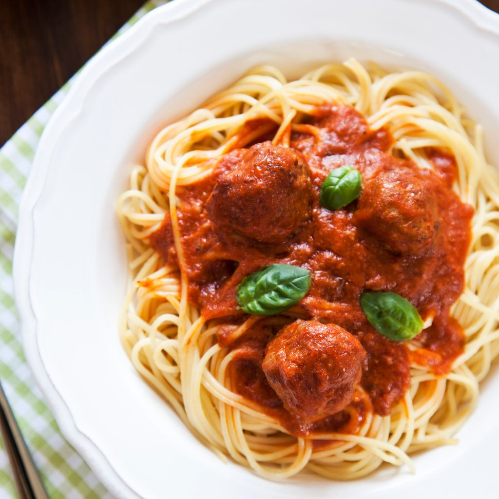

3 Lekkere recepten

Ingredienten
-
1 ui
-
1 klontje boter
-
700 g gehaktballen
-
500 gram spaghetti
-
Kruiden
Berdeiding
-
Fruit de uien in een beboterde koekenpan.
-
Voeg vervolgens de gehaktballen toe, pas op dat ze niet breken, draai ze om zodat ze goed gaar zijn.
-
Als ze goudbruin zijn, voeg je gepelde tomaten, een beetje zout en peper en wat fijne kruiden toe om het op smaak te brengen. Laat alles 2 minuten sudderen.
-
Kook de pasta in kokend water volgens de aangegeven tijd op de verpakking (9 minuten in het algemeen).